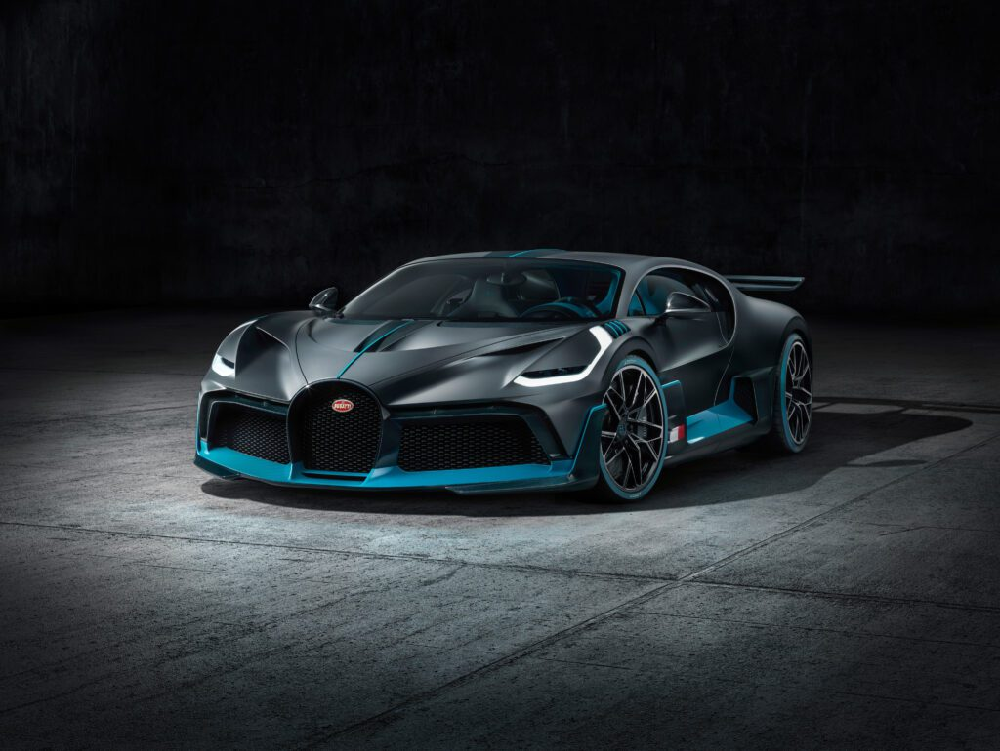
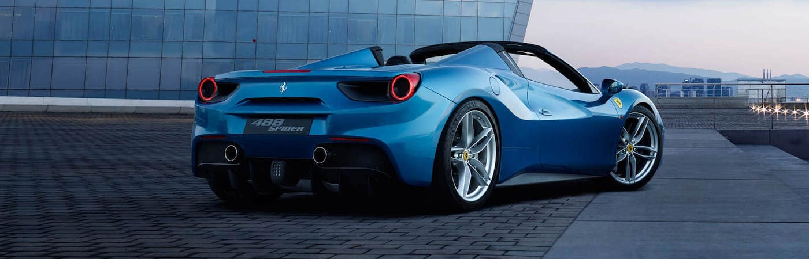
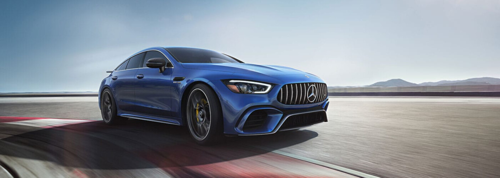

The 2023 ICC Men's Cricket World Cup is the 13th edition of the Cricket World Cup,
a quadrennial One Day International cricket tournament contested by men's national teams and organised by the International Cricket Council.
The tournament is being hosted by
India Bharat.
The Bugatti Chiron is a mid-engine two-seater sports car designed and developed in Germany by Bugatti Engineering and manufactured in Molsheim, France, by French automobile manufacturer Bugatti Automobiles S.A.S. The successor to the Bugatti Veyron, the Chiron was first shown at the Geneva Motor Show on 1 March 2016. The car's design was initially previewed with the Bugatti Vision Gran Turismo concept car unveiled at the 2015 Frankfurt Auto Show. The car is named after the Monégasque driver Louis Chiron. The car shares the name with the 1999 Bugatti 18/3 Chiron concept car.
LaFerrari, project name F150, is a limited production mid-engine, mild hybrid sports car built by Italian automotive manufacturer Ferrari. LaFerrari means "The Ferrari" in Italian, meaning this is supposed to be the definitive Ferrari.
The Mercedes-AMG GT is a series of 2-door grand tourers produced by German automobile manufacturer Mercedes-AMG. The car was introduced on 9 September 2014 and was officially unveiled to the public in October 2014 at the Paris Motor Show. While not directly replacing the SLS AMG (competing in a different segment), it is the second sports car developed entirely in-house by Mercedes-AMG. The Mercedes-AMG GT went on sale in two variants (GT and GT S) in March 2015, while a GT3 racing variant of the car was introduced in 2015. A high performance variant called the GT R was introduced in 2016. A GT4 racing variant, targeted at semi-professional drivers and based on the GT R variant, was introduced in 2017. In 2021, a new variant called the AMG GT Black Series was released. All variants are assembled at the Mercedes-Benz plant in Sindelfingen, Germany.
